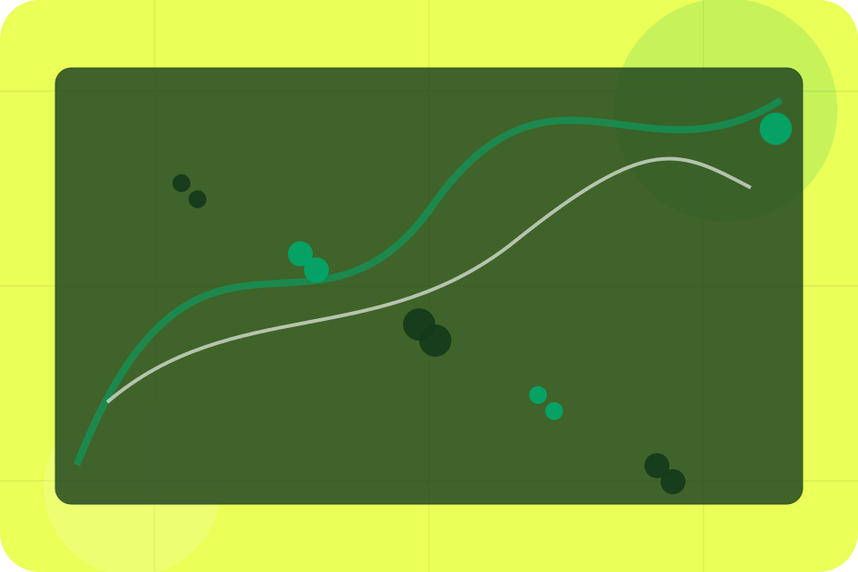
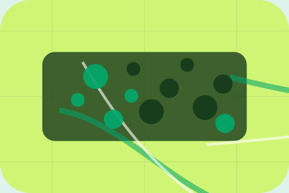

Context
Drivers gives the page a specific angle instead of repeating the navigation label.
Company / 01
Company opens as a clear transport decision hub: what Ride offers, who it helps, why it matters, and which route to take first.
The first screen combines positioning, proof, primary action, and fast internal navigation, so people can act immediately or compare the rest of the company route with context.
Green transit planner hero
Select the closest route and Ride keeps the next step, proof, and follow-up expectation aligned with safe reliable movement.

Company / 02
Drivers adds professional context to the company route, using the map-first route planner structure to support safe reliable movement before visitors choose a next step.
Ride uses transit route cards and focused copy to make the decision easier to scan, aligning the section with safe reliable movement rather than filling space.
Explore CompanyDrivers gives the page a specific angle instead of repeating the navigation label.
The transit route cards show what to compare, what to avoid, and what matters most for transport, mobility & passenger services visitors.
The final cue points to a useful internal route so the section keeps the journey moving.
Company / 03
Vehicles explains the practical scope, best-fit situations, and expected outcome so transport visitors can compare options without decoding jargon.
The section keeps the offer concrete: what is included, who it is best for, what decision it supports, and which linked route gives the deeper detail.
Explore CompanyWho should use vehicles and when it belongs in the company journey.
The practical benefit visitors should expect after choosing this route.
Where to compare details, pricing, support, or contact options before committing.
Company / 04
Standards gives the proof layer for company: standards, evidence, and reassurance that make the next decision feel grounded.
Instead of relying on vague claims, Ride presents visible standards, process cues, and proof artifacts that help transport visitors judge fit.
Explore CompanyVisible proof that helps visitors believe the claims behind standards.
The quality, safety, or operating expectation this section makes explicit.
What becomes clearer before someone decides whether to book a ride.
Company / 05
Reliability shows what changes after the work: clearer decisions, visible progress, and proof points that connect the offer to real outcomes.
The layout connects before-and-after thinking with measured outcomes, making the result easy to scan without promising what the business cannot guarantee.
Explore CompanyThe uncertainty, delay, or missed opportunity visitors bring into reliability.
The clearer, safer, or more valuable state Ride is designed to support.
The visible cue that connects reliability to a believable decision, not a loose claim.
Company / 06
Insurance adds professional context to the company route, using the map-first route planner structure to support safe reliable movement before visitors choose a next step.
Ride uses transit route cards and focused copy to make the decision easier to scan, aligning the section with safe reliable movement rather than filling space.
Explore CompanyInsurance gives the page a specific angle instead of repeating the navigation label.
The transit route cards show what to compare, what to avoid, and what matters most for transport, mobility & passenger services visitors.
The final cue points to a useful internal route so the section keeps the journey moving.
Company / 07
Values adds professional context to the company route, using the map-first route planner structure to support safe reliable movement before visitors choose a next step.
Ride uses transit route cards and focused copy to make the decision easier to scan, aligning the section with safe reliable movement rather than filling space.
Explore CompanyRide structures values around context, judgment, and a clear next route so visitors can compare the block quickly before they book a ride.
Book RideCompany / 08
Experience adds professional context to the company route, using the map-first route planner structure to support safe reliable movement before visitors choose a next step.
Ride uses transit route cards and focused copy to make the decision easier to scan, aligning the section with safe reliable movement rather than filling space.
Explore CompanyExperience gives the page a specific angle instead of repeating the navigation label.
The transit route cards show what to compare, what to avoid, and what matters most for transport, mobility & passenger services visitors.
The final cue points to a useful internal route so the section keeps the journey moving.
Company / 09
Trust gives the proof layer for company: standards, evidence, and reassurance that make the next decision feel grounded.
Instead of relying on vague claims, Ride presents visible standards, process cues, and proof artifacts that help transport visitors judge fit.
Explore CompanyVisible proof that helps visitors believe the claims behind trust.
Company / 10
Ride closes the company route with a clear action, a quick reminder of the value, and a low-friction way to book a ride.
Visitors who are ready can use the primary action. Visitors who are still comparing can scan the section links, proof, and support routes before they book a ride.
Book RideThe final block keeps the choice simple: act now, compare one more proof route, or send enough detail for a focused response.
Book Ridesafe reliable movement
A passenger mobility site with green route planning, fare estimate cards, map surfaces, and fast booking. Company ends with a direct path to book a ride, plus enough context for visitors who still need to compare.

Book RideInformation is provided for planning and should be reviewed for the final client, location, and operating rules.